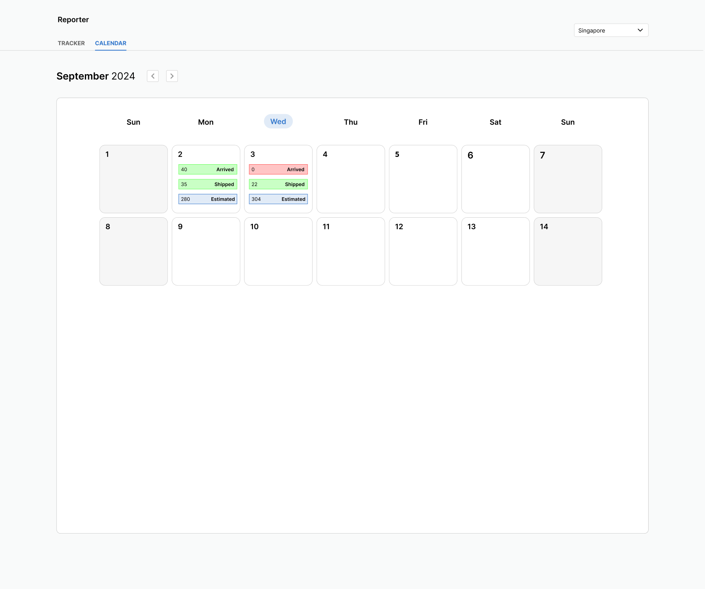

Warehouse Performance Dashboard
Product Designer · EU Automation
An in-house performance tracking system built to replace manual spreadsheet reporting. It gave warehouse managers across global locations real-time, reliable visibility into daily fulfilment without relying on self-reported data from staff.


Role & Scope
The Problem
EU Automation's warehouse teams had no reliable way to track package fulfilment. Performance data was entered manually into spreadsheets and pulled into Google Looker, but the process was slow and the data wasn't trustworthy. Managers were working off figures that employees had self-reported, which often came in late, incomplete, or not at all.
The knock-on effect was real. Without accurate visibility, managers couldn't spot delays early enough to act on them. Packages were arriving late, and complaints were coming in from customers.
The problem wasn't that managers lacked the right tools to analyse data. It was that the data itself couldn't be trusted.
Research
I started by speaking to warehouse managers and going through the existing spreadsheets and Looker setup with them. I wanted to understand what they were actually trying to track, what decisions they were trying to make, and where things were falling short.
I also spoke to warehouse employees about how they were reporting their work. They found the process cumbersome. It was an extra admin task on top of their main job, so it often got deprioritised. That conversation shifted my understanding of the problem. The inaccurate data wasn't just a systems issue; it was partly a design issue. The reporting process was too friction-heavy to be done consistently.
From there, I worked with the engineering team to understand what was possible through VIEW, the company's internal package management system. That conversation shaped the direction of the whole project.
The Solution
Rather than improving the reporting process, we removed it. By connecting the dashboard directly to VIEW, every package fulfilment was recorded automatically. Staff didn't need to log anything separately; it just happened as part of their normal workflow.
This meant managers were looking at live, accurate data rather than a snapshot of what people remembered to submit. The reliability issue was solved at the source.
Dashboard Design
Tracker Tab
The Tracker tab was built for managers who needed to look at individual employee performance. A filter bar at the top let them narrow results by date, time of day, and warehouse location, covering sites in Singapore, Chicago and the United Kingdom.
Below the filters, a summary figure shows the total number of packages to be fulfilled for the selected period. Each employee then appears as a card with two pill indicators: green for packages fulfilled, and blue for their total target. The colour coding meant managers could scan the list quickly and pick out where someone was falling behind without having to compare numbers individually.
Expanding any card reveals a bar chart showing output over time, which was useful for spotting patterns rather than just a point-in-time figure. The full view could also be exported as a CSV.
Calendar Tab
The Calendar tab was designed for a different kind of question. Rather than drilling into individual staff, it gave managers a daily operational overview, showing arrived, shipped, and estimated figures for each day, colour-coded by volume threshold.
Green
Volume is at an acceptable level. No action needed.
Orange
Performance could be better. Worth looking into before it becomes a problem.
Red
Unacceptable volume. Immediate attention needed.
The colour system meant managers could read the health of operations at a glance, then use the Tracker tab to dig into the detail where needed. The two tabs were designed to work together in that way: broad picture first, specifics when required.
Design Decisions
The main thing I kept coming back to was how quickly a manager needed to understand what was on screen. These are busy people checking in between other tasks, not sitting down to study a report. The interface needed to communicate status quickly, with as little reading as possible.
That's why the pill indicators and colour coding did most of the work rather than raw numbers. A green pill next to an employee name tells you what you need to know without any mental arithmetic.
The filters were important too. Managers at different locations think about their operations differently. Giving them control over the view meant the dashboard felt relevant to their specific context rather than a generic report that needed interpreting.
Constraints & Challenges
The integration with VIEW was the biggest constraint. What the dashboard could show was tied to what VIEW could expose, so I worked closely with engineering throughout to understand what was and wasn't possible. A couple of ideas had to be dropped because the data wasn't available at the right level of detail.
Designing for three different locations also added complexity. Each site had different team sizes, different volumes and different ways of working. The filter system needed to handle that without making the interface feel cluttered.
There was also a balance to strike between two types of manager using the tool: those who wanted a quick operational overview and those who needed to look at specific employees in detail. The two-tab structure came out of trying to serve both without compromising either.
Outcome
The dashboard shipped and was adopted across the business. Managers described it as a game changer, which was good to hear given how entrenched the spreadsheet process had been.
The most significant shift was having data that managers could actually rely on. Performance conversations, escalations and planning all became easier because everyone was working from the same accurate picture. Reports that had previously taken time to pull together were now available instantly.
Removing the manual logging step also made things easier for warehouse staff, which wasn't the primary goal but was a welcome result.
What I Learned
Sometimes the right move is to remove a broken process rather than improve it. Trying to make manual reporting more reliable would have been the wrong direction. Automating the data collection through VIEW solved the problem properly.
Speaking to warehouse employees was just as important as speaking to managers. Managers could tell me what data they weren't getting. Employees explained why the data was unreliable in the first place. I wouldn't have reached the right solution without both perspectives.
Getting engineering involved early made a real difference. Understanding the constraints of VIEW before designing anything saved time and kept the work grounded in what was actually buildable.
Internal tools are easy to undervalue from a design standpoint, but the people using them have just as much at stake as any consumer product user. Getting the usability right had a direct impact on the business.